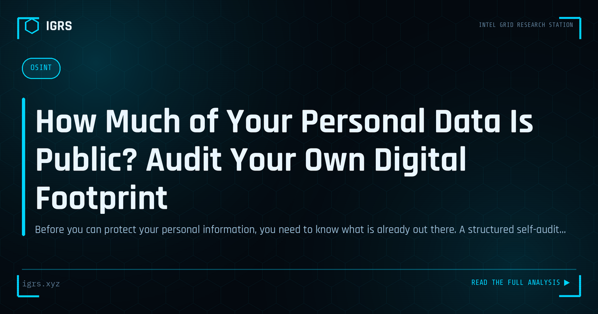

How Much of Your Personal Data Is Public? Audit Your Own Digital Footprint
| File No. | OD-002/2026 |
| Subject | Self-assessment methodology for personal data exposure and remediation steps |
| Category | Privacy & Safety |
| Author | Manuj Kumar Pandey |
| Published | 2026-04-14 |
| Reading time | 12 minutes |
Before you can protect your personal information, you need to know what is already out there. A structured self-audit, the way an investigator would approach it.
Auditing Your Digital Footprint
Every person leaves a trail of information online — accounts, posts, mentions, data in breaches, and details scattered across the web. This digital footprint shapes how others, including attackers and fraudsters, can target you. Auditing your own footprint reveals your exposure and lets you reduce it. For Indian users, and especially those in sensitive roles, a digital footprint audit is a valuable, empowering exercise. This guide explains how to conduct one.
Why Audit Your Footprint
Your digital footprint is the raw material attackers use to target you. Personal information enables social engineering, exposed credentials enable account takeover, and scattered details enable identity theft and reconnaissance. By auditing your footprint, you see yourself as an attacker would, identify your exposures, and take steps to reduce them. This is the same OSINT process investigators use, turned toward self-protection — knowing what is out there is the first step to controlling it.
Areas to Audit
| Area | What to Check |
|---|---|
| Search results | What appears when you search your name |
| Social media | Public posts and information |
| Data breaches | Exposed credentials |
| Accounts | Old and forgotten accounts |
| Public records | Information in registries |
Searching Yourself
Begin by searching your own name, email, phone number, and usernames across search engines. Use quotation marks for exact matches and combine terms to find specific information. This reveals what is publicly visible about you — profiles, mentions, posts, and details. Searching variations of your name and information, as an investigator would, surfaces the breadth of your public presence and often reveals information you did not realise was accessible.
Checking for Breached Data
Data breaches are a major source of exposure. Have I Been Pwned (haveibeenpwned.com) reveals whether your email and passwords appear in known breaches. If they do, change those passwords everywhere they are used and enable multi-factor authentication. Breached credentials are actively exploited for account takeover, so identifying and remediating them is among the most important outcomes of a footprint audit.
Reviewing Accounts and Social Media
Old, forgotten accounts are a common exposure, holding personal data and potentially using reused passwords. Identifying and either securing or closing them reduces risk. Reviewing social media for publicly visible personal information — and tightening privacy settings — reduces what is available for social engineering and reconnaissance. Username search tools help find accounts you may have forgotten across the many platforms where you have registered over the years.
Reducing Your Footprint
Having identified exposures, reduce them: change breached passwords and enable MFA, tighten social media privacy, close unused accounts, request removal of unnecessary personal information where possible, and be more deliberate about future sharing. The goal is not to disappear but to control your exposure — minimising the information available to those who would exploit it while maintaining the online presence you genuinely want.
Making It a Habit
For Indian users, auditing your digital footprint is a valuable exercise that should be repeated periodically, as new information accumulates over time. For those in sensitive roles — investigators, security professionals, and others who may be targeted — it is an important part of personal operational security. By regularly seeing yourself as an attacker would, identifying exposures, and reducing them, you take meaningful control of your digital presence and significantly reduce your vulnerability to the social engineering, fraud, and targeting that exploit an uncontrolled digital footprint. The exercise is empowering: it transforms you from a passive subject of online exposure into an active manager of your own digital security.